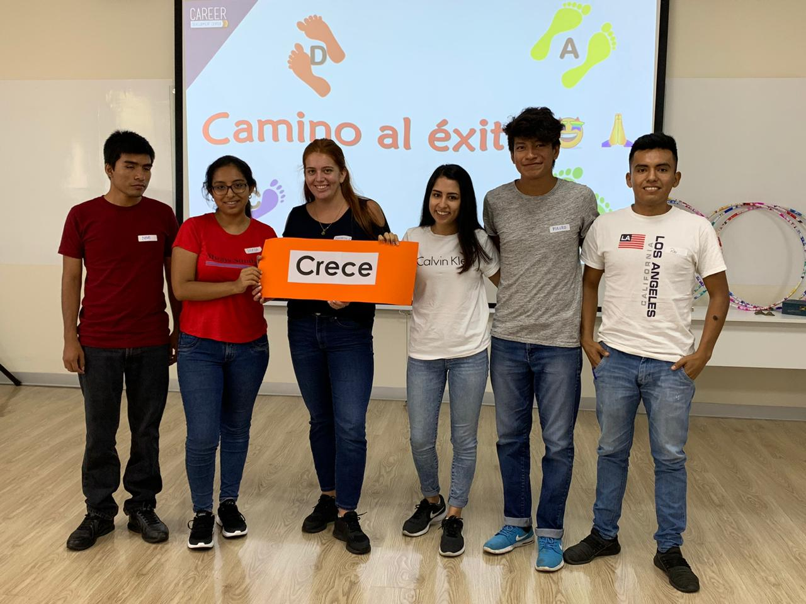

Introducción
Fueron dos semanas de un arduo trabajo en las cuales se desarrolló la metodología de desing-thinking, pero esta experiencia fue más allá de aprender una metodología, pues se trató también de desarrollar nuevos skills como: el trabajo en equipo, empatía, resiliencia, entre otras; para luego poner alcanzar el objetivo de diseñar una bebida que conecte a los centennials a través de una experiencia diferente.
Centrándonos en la metodología, se puede encontrar su maravilla en que toma a las necesidaes del usuario como su enfoque central, en base a esto se inicia un recorrido en el cual el equipo dedica sus energías a idear soluciones que puedan satisfacer la necesidad o necesidades del usuario.
Un punto muy interesante que aprendí en el bootcamp fue que no siempre el usuario sabe qué es lo que quiere, por ello se debe iniciar con una exploración en la cual se logre comprender el contexto y empatizar con el usuario; para así posteriormente identificar el problema real y validar las alternativas de solución.
Desarrollo
Conclusiones
Gracias a esta experiencia he logrado expandir no solo mi conocimiento técnico sino también mi desarrollo personal, pues aprendí a como ser más empático y a trabajar en equipo.
Como reflexiones de este bootcamp me puedo llevar que todos somos capaces de innovar, es mentira que no somos creativos o que no tenemos esta capacidad; también que cuando se trabaja en equipo, cada idea cuanta por más loca o fuera de lugar que paresca y finalmente que para el desarrollo de un producto primero de debe partir por conocer las necesidades del usuario pues este no siempre sabe lo que quiere.
En conclusión, disfruté mucho del bootcamp pues aprendí y al mismo tiempo me divertí haciendolo.